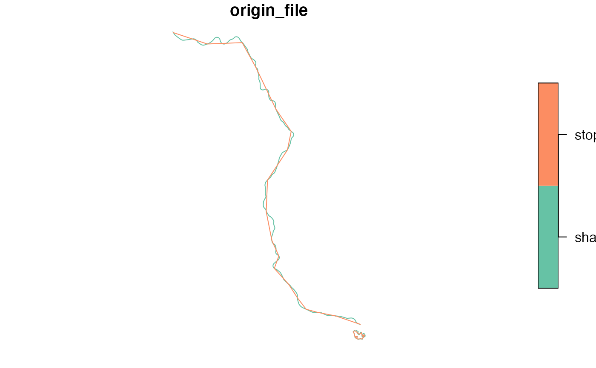

Returns the geometry of each specified trip_id, based either on the
shapes or the stop_times file (or both).
get_trip_geometry(
gtfs,
trip_id = NULL,
file = NULL,
crs = 4326,
sort_sequence = FALSE
)A GTFS object, as created by read_gtfs().
A character vector including the trip_ids to have their
geometries generated. If NULL (the default), the function generates
geometries for every trip_id in the GTFS.
A character vector specifying the file from which geometries
should be generated (either one of or both shapes and stop_times). If
NULL (the default), the function attemps to generate the geometries from
both files, but only raises an error if none of the files exist.
The CRS of the resulting object, either as an EPSG code or as an
crs object. Defaults to 4326 (WGS 84).
A logical specifying whether to sort shapes and
timetables by shape_pt_sequence and stop_sequence, respectively.
Defaults to FALSE, otherwise spec-compliant feeds, in which
shape/timetables points are already ordered by
shape_pt_sequence/stop_sequence, would be penalized through longer
processing times. Geometries generated from unordered sequences do not
correctly depict the trip trajectories.
A LINESTRING sf.
The geometry generation works differently for the two files. In the case of
shapes, the shape as described in the text file is converted to an sf
object. For stop_times the geometry is the result of linking subsequent
stops along a straight line (stops' coordinates are retrieved from the
stops file). Thus, the resolution of the geometry when generated with
shapes tends to be much higher than when created with stop_times.
data_path <- system.file("extdata/spo_gtfs.zip", package = "gtfstools")
gtfs <- read_gtfs(data_path)
trip_geometry <- get_trip_geometry(gtfs)
head(trip_geometry)
#> Simple feature collection with 6 features and 2 fields
#> Geometry type: LINESTRING
#> Dimension: XY
#> Bounding box: xmin: -46.98404 ymin: -23.73644 xmax: -46.63535 ymax: -23.19474
#> Geodetic CRS: WGS 84
#> trip_id origin_file geometry
#> 1 CPTM L07-0 shapes LINESTRING (-46.63535 -23.5...
#> 2 CPTM L07-1 shapes LINESTRING (-46.87255 -23.1...
#> 3 CPTM L08-0 shapes LINESTRING (-46.64073 -23.5...
#> 4 CPTM L08-1 shapes LINESTRING (-46.98404 -23.5...
#> 5 CPTM L09-0 shapes LINESTRING (-46.77604 -23.5...
#> 6 CPTM L09-1 shapes LINESTRING (-46.69711 -23.7...
# the above is identical to
trip_geometry <- get_trip_geometry(gtfs, file = c("shapes", "stop_times"))
head(trip_geometry)
#> Simple feature collection with 6 features and 2 fields
#> Geometry type: LINESTRING
#> Dimension: XY
#> Bounding box: xmin: -46.98404 ymin: -23.73644 xmax: -46.63535 ymax: -23.19474
#> Geodetic CRS: WGS 84
#> trip_id origin_file geometry
#> 1 CPTM L07-0 shapes LINESTRING (-46.63535 -23.5...
#> 2 CPTM L07-1 shapes LINESTRING (-46.87255 -23.1...
#> 3 CPTM L08-0 shapes LINESTRING (-46.64073 -23.5...
#> 4 CPTM L08-1 shapes LINESTRING (-46.98404 -23.5...
#> 5 CPTM L09-0 shapes LINESTRING (-46.77604 -23.5...
#> 6 CPTM L09-1 shapes LINESTRING (-46.69711 -23.7...
trip_ids <- c("CPTM L07-0", "2002-10-0")
trip_geometry <- get_trip_geometry(gtfs, trip_id = trip_ids)
trip_geometry
#> Simple feature collection with 4 features and 2 fields
#> Geometry type: LINESTRING
#> Dimension: XY
#> Bounding box: xmin: -46.87255 ymin: -23.55262 xmax: -46.62922 ymax: -23.19474
#> Geodetic CRS: WGS 84
#> trip_id origin_file geometry
#> 1 CPTM L07-0 shapes LINESTRING (-46.63535 -23.5...
#> 2 2002-10-0 shapes LINESTRING (-46.62963 -23.5...
#> 3 CPTM L07-0 stop_times LINESTRING (-46.63544 -23.5...
#> 4 2002-10-0 stop_times LINESTRING (-46.62962 -23.5...
plot(trip_geometry["origin_file"])
